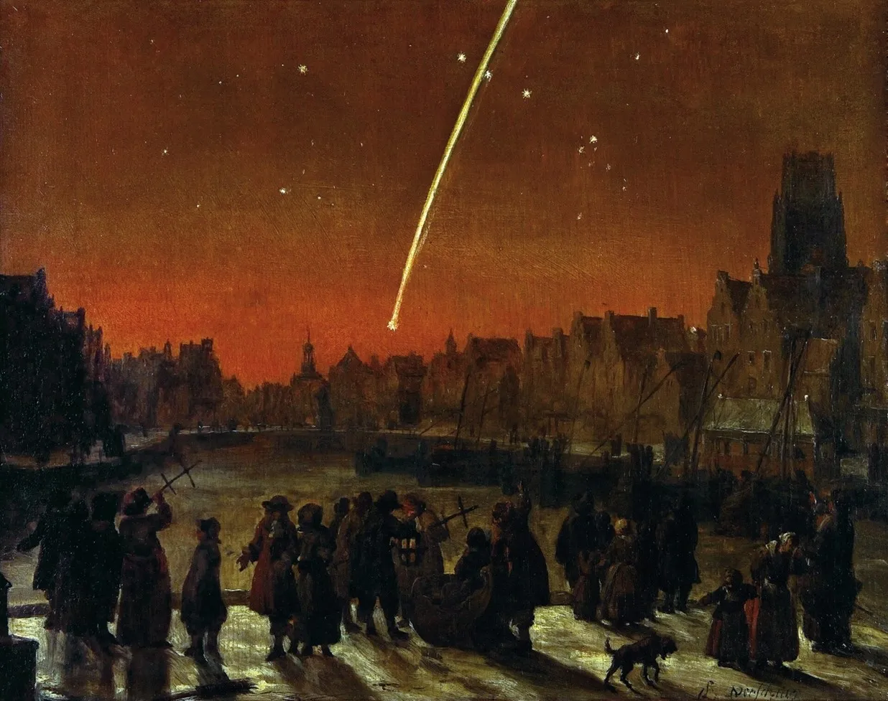

1. Freedom to Wonder
Визначення
- Awe це емоція яку ми відчуваємо коли сприймаємо неосяжність, в поєднанні з потребою в когнітивному сховищі. Когнітивне сховище значить бажання знайти простір в нашому розумі для цієї неосяжної речі. Неосяжність може бути фізична (розмір) чи концептуальна (складність). Наприклад, ми можемо відчувати цю емоцію завдяки нічному небу, великій будівлі як храму чи піраміди, науковій теорії, подвигам якоїсь людини чи істоти, чи математичному розв'язанню проблеми.
- Wonder це емоція яка з'являється в результаті погляду на невідому теориторію, яка лежить прям на кордоні нашого теперішнього розуміння. Як Awe, вона спонукає потребу в когнітивному сховищі, але не обов'язково має вимір неосяжності. Приклади – неочікувана складність комах під мікроскопом, незвична скамянілість чи дивної форми кристал, або ж рідкісна астрономічна подія.
Епістемічні та само-трансцедентні емоції
- Awe та Wonder об'єднує дві речі.
- По-перше, це дві емістемічні емоції, тобто вони мотивують нас досліджувати наше середовище. До інших епістемічних емоцій відносять цікавість, сумнів та неочікуваність. Деякі емістемічні емоції допомагають нам відчути те, що ми вже знаємо – відчуття знання, впевненності, правильності. Інші епістемічні емоції направлять нашу увагу до того, чого ми ще не знаємо. Це Curiosity, Awe та Wonder.
- По-друге, вони само-трансцендентні емоції., тобто вони допомагають нам змістити фокус з нас самих та наших проблем. Вони включають також: співчуття, любов, вдячність.
- Ці два аспекти працюють разом в Awe та Wonder: щоб дізнатися більше про світ і про себе, нам необхідно зробити себе незнайомими (defamiliarize). Ці дві емоції дозволяють нам побачити щось або вперше або ніби як вперше.
Неочікуваний сюрприз душі – як подив живить філософію
- Бачити щось або вперше або ніби як вперше – це важлива навичка як для здобуття знання, так й для інтегрування цього знання в наповнене сенсом життя.ї
- Філософія народилася у здивуванні, і самі філософські тексти часто провокують здивування або відчуття бачення вперше чогось знайомого.
- Мікроскопічні та макроскопічні дива: в 1665 опубліковано Micrographia — революційну книгу, яка містить більше 30 деталізованих малюнків та описів обєктів під мікроскопом. Ця книга дала можливість людям вперше побачити світ маленьких масштабів. Ця книга була одним з перших наукових бестселерів.
- Вся філософія заснована на двох речах: цікавості та поганому зорі.
- Напруга між негативним та позитивним Awe: усвідомлення, що світ неосяжний може призвести до відчуття само-анігіляції та жаху, але також воно може дати нам відчуття сводоби та космополітичний оптимізм, відчуття що ми всі переплетені частини дивовижного світу.
- Визначення Декарта: «Wonder – це неочікуваний сюрприз душі, який допомагає звернути увагу на об'єкт, який здається незвичним».
- Адам Сміт про Wonder: «невизанченість та тривожна цікавість».
- Наука і філософія народилися з подиву, але також вони його породжують. Подив або дивування відбувається коли щось порушує наші очікування
Психологія подиву
- Awe дає відчуття «маленького себе», роблячи нас скормнішими. Також воно відкриває розум, дозволяючи легше ставити під сумніви те, що ми знаємо.
- Майже всі дослідження Awe сьогодні відсилають до концепту sublime в філософії мистецтва та естетиці. Обговорення цього ключового концепту було бурхливим у 18 столітті, переважно Бруком та Кантом.
- Про різницю між beautiful та sublime. Друге має характер відсутності порядку.
- Перший елемент sublime – це неосяжність, другий – нехватка знання.
- Moral elevation shares some features with awe
- Awe часто супроводжується іншими емоціями, такими як страх, краса чи admiration
Витоки науки в магії
- Магія – це колективний термін для практик людей, який окреслює сприйняття або створення див
- Створити світ в фентезі – означає створити світ з альтернативними законами природи
- Магія не ірраціональна, вона слідує за глибокими cтруктурами людського мислення, які також лежать в основі науки та причинно–наслідкового мислення1
- Наприклад, магічні ритуали зазвичай причнно-наслідково туманні — ми не знаємо яким чином магічні закляття мають працювати — але теж саме справедливо відноситься до того, як звичайні люди користуються технологіями. Більшість людей використовує GPS, вакцинацію та комп'ютерну пам'ять без розуміння як вони працюють.
- Магія включає подвійний аспект активної сили (хардова магія) та пасивного здивування (софтова магія)2. Щось схожк робить наука, коли допомагає контролювати наше середовище.
- Фрезер вважав, що в основі магії, релігії та науки лежить віра в порядок природи. Маг вірить, що одні і ті самі причини (одне закляття) призведуть до одних і тих самих результатів (результатів закляття). Маг, як і науковець, втручається в порядок речей, використовуючи повторюваності, які він спостерігає в світі. Про витоки науки в магії писали Marcel Mauss та Otto Neurath.
- «Yates thesis»: нова модерна наука з'явилася з магії, герміневтики та окультизму Ренісансу. В книзі про Джордано Бруно вона стверджує, що той прийняв геліоцентризм і був страчений за це, не стільки з міркувань астрономічних доказів та підрахунків, скільки з відчуття здивування перед безкінечним космосом, джерелом яких були його читання герменевтичних текстів. 3
- Маги, напротивагу природнім філософам, напряму маніпулювали природними матеріалами та спостерігали ефекти цих маніпуляцій – так описував науковців Джодано Бруно4. Магніти, приливи і інші аномалії не вели себе нормально, тобто так як люди звикли на той час спостерігати явища і тому такі аномальні явища класифікувалися як "натуральна магія" в часи Ренесансу. Десь два століття потому, наука зайняла місце натуральної магії.
- Когнітивна основа магії – це подив разом з бажанням контролю.
Бачення з першістю: релігія як технологія подиву
- Так само як ми використовуємо калькулятори та інші інструменти, щоб вирішувати математичні проблеми, релігія допомагає нам вирішити екзестенційні проблеми.
- Ритауал збагачує наш розум, доглядаючи за нашими емоціними та когнітивними потребами5.
- Одна з таких потреб — це потреба в awe та wonder. Вони не тільки дають нам почуватися краще, але й челенджать наше мислення.
- Релігії — сильні шейпери звичок. Ми часто покладаємося на звички в нашій взаємодії з навколишнім світом. З часом, ми культивуємо звички через практику, і таким чином вони стають автоматичними. Звички чимось схожі на навички. Вони «поларизують світ, створюючи купу знаків, які направляють наші дії»6
- Тому створення нових звичок потребує багато сил, але також допомагає делегувати багато прийняття рішень. Див: Romdenh-Romluc «Habit and attention»
- Створення звички дає певну свободу, див: Rietveld, «Affordances and unreflective freedom»
- Погляд Мерло-Понті на навички та звички дає новий спосіб мислення про релігію. В кінці кінців, релігія це не лише віра, але й система практик та ритуалів, таких як літургія, молитва, фестивалі та голодування.
- Подив у Декарта — це емоція першості. Це те, що ми відчуваємо до того, як оцінюуємо явище як негативне чи позитивне.
- Є проблема в тому, що люди приймають світ за належне. Це небезпечно, і подив є антидотом. Щоб бачити світ як цінність саму в собі, а не засіб для досягнення чогось іншого – необхідно відчувати подив. Див: Joushua Heschel.
- Коли хтось говорить благословіння, він налаштовує себе на те, наскільки рідкими, дорогоцінними та необовзяковими є речі в світі. Це умова автентичного усвідомлення того, що існує.
- Koans — загадки які дають дзен-монахам є технологіями подиву. Karesansui — японський сухий сад також є технологією подиву.
- Деякі релігіозні практики допомагають нам бачити світ з першістю, тобто так ніби вперше, не як необхідний, а з подивом замість автоматизму. Наприклад, це роблять благословіння в Іуадїзмі.
Як подив регулює науку
- On marvels and miracles